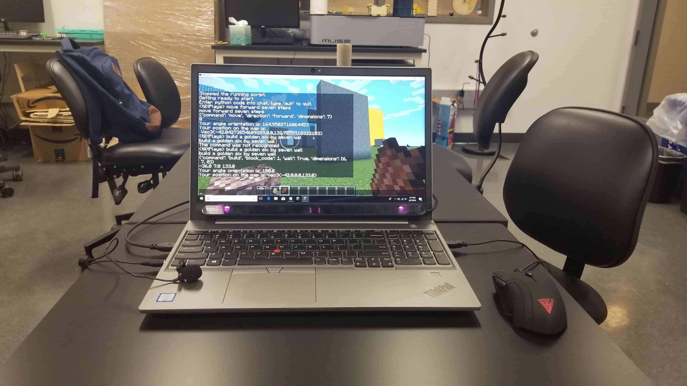
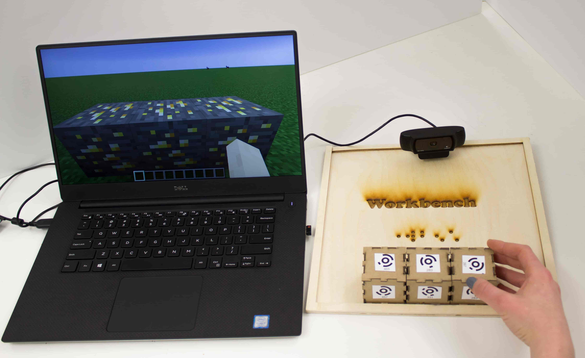

Multicraft + Tangicraft


Multicraft + Tangicraft works on multimodal interfaces to empower individuals with physical impairments to play and create in the popular video game Minecraft. Multicraft utilizes Gaze and Speech to replace the traditional mouse and keyboard interface. By looking at a location on the screen and uttering a command, users can build in the Minecraft world. Tangicraft utilizes tangible blocks with webcam detectable codes. Users can construct a physical structure in front of a webcam and call it in the Minecraft world by pressing a button on an Arduino microcontroller. Our team is currently conducting user tests to drive iteration on our initial designs.
Videos
Eye Tracking with Multicraft
Text Commands with MultiCraft
Speech Commands with Multicraft
Obstacle Course Challenge